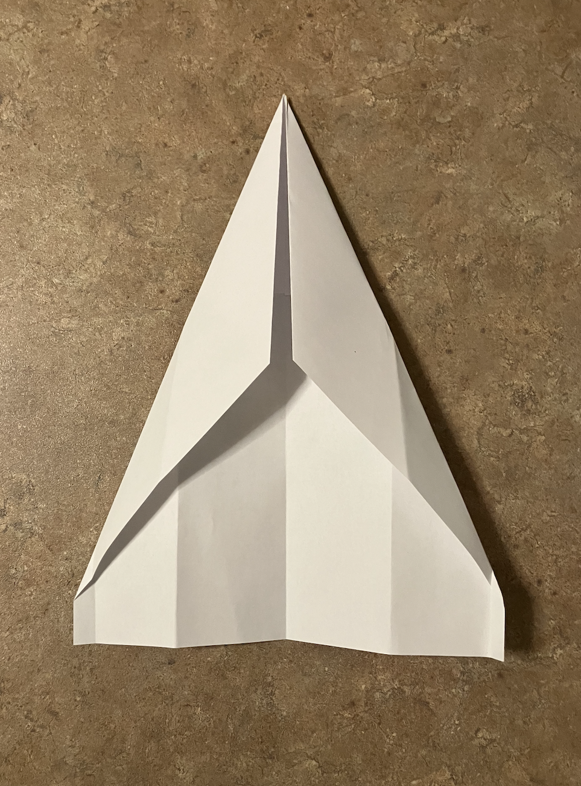

Start with the paper having the short end on top and the long end on the sides. Then, fold the top corners to meet eachother at the center of the page.
You can fold the paper in half from left to right to make a crease and then unfold to have a more precise fold.
Next, fold both of the top corners once again to get a steeper angle.
Fold the paper perfectly in half from left to right or right to left.
Fold the left side of the newly formed triangle to the right lining up with the bottom (or right to left depending on how you folded step 3).
Fold the other side of the triangle, the same as done in step 4.
Next, straighten out the wings into an approximate 90 degree angle, lining up with the middle of the plane.
You can fold the tips of the wings if you'd like to see your finished product.